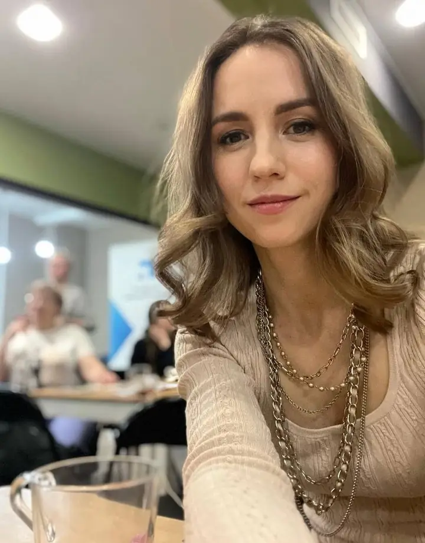

Всё понятно головой
Вы много читали, анализировали, объясняли себе. Разложили по полочкам. А внутри по-прежнему держит — и от этого только хуже.
Психолог · 17 лет практики
Я работаю с ситуациями, где человек уже много понял головой, но внутри всё равно больно, страшно, обидно или не двигается. Мы находим глубинную причину, убираем заряд и возвращаем ясность, выбор и движение.

Кому это подходит
Ко мне приходят не за советами. Советы вы уже слышали — и, скорее всего, они не помогли.
Вы много читали, анализировали, объясняли себе. Разложили по полочкам. А внутри по-прежнему держит — и от этого только хуже.
С подругой, с психологом, сами с собой — раз за разом одно и то же. Разговор ходит по кругу и не выводит никуда.
Предательство, измена, старая история с родителями. Умом простили давно. Внутри — нет.
Решение назрело, а сделать шаг не получается. Кажется, что это страх. Часто это что-то совсем другое.
Всё вроде правильно, а внутри пусто. Однажды вы выбрали не то, что хотели, — и с тех пор живёте этим выбором.
Сжимается горло, каменеет спина, пропадает дыхание. Тело реагирует на то, что голова ещё не признала.
Кто я
Семнадцать лет я исследую человеческую природу. Начала с раннего развития детей и работы с родителями, пришла к глубинной работе со взрослыми. У меня два образования: финансовое и психолого-педагогическое — и, кажется, первое помогает мне понимать тему денег не хуже второго.
Я беру всё, что помогает увидеть человека: психологию, телесные практики, расстановки, работу с образами и метафорическими картами, философию. Ни одна школа не стала для меня религией. Человек важнее техники.
Как это устроено
Никакой мистики и никаких диагнозов. Только внимательный, честный разговор — и то, что за ним открывается.
Вы рассказываете свою ситуацию так, как получается. Не нужно готовиться, формулировать красиво или «правильно» понимать себя заранее.
За темой денег может обнаружиться право жить по-своему. За обидой — способ не отпускать. Я слышу не проблему, а систему: где живёт чувство, что его питает, какая ранняя сцена его держит.
Здесь работает то, что подходит именно вам: расстановочные техники и заместители, метафорические карты, телесное внимание, проживание вместо объяснения. Иногда изменения происходят за считаные минуты.
Цель не в том, чтобы стать другим человеком. А в том, чтобы вспомнить, кто вы, когда перестаёте жить из страха. Дальше вы решаете сами — и уже можете решать.
Форматы
Один на один, онлайн, 60–90 минут. Подходит, если есть ситуация, которую вы уже много раз обдумывали, но внутри она всё ещё держит.
До шести человек. Через тему, разборы и заместителей видно то, что в одиночку разглядеть трудно. Камерно — чтобы хватило внимания каждому.
Можно прийти в группу не со своим запросом, а заместителем. Это не «помощь другому»: почти всегда поднимаются собственные процессы и приходит своё.
Бесплатная встреча, где я беру одну тему и разбираю её глубже обычного разговора. Хороший способ посмотреть, как я работаю, ничего не решая заранее.
Несколько встреч подряд, когда тема большая и хочется идти последовательно, а не выхватывать по кусочку.
Это нормально и совершенно не обязательно решать заранее. Напишите пару строк о том, что происходит, — я подскажу, какой формат подойдёт.
Подробнее о каждом формате — на отдельной странице. Стоимость называю в переписке: она зависит от формата и того, что вам сейчас нужно.
Календарь
Открытые разборы проходят по понедельникам. Прийти можно молча — просто послушать.
Тексты
Пишу о том, как устроены внутренние застревания — без обещаний и без эзотерики.
Запись
Не нужно формулировать запрос красиво и «правильно». Достаточно пары строк о том, что происходит, — дальше разберёмся вместе.
Отвечу в течение дня. Если вдруг не отвечу — напишите, пожалуйста, в Telegram: иногда письма теряются, а вы важнее письма.
Написать в Telegram